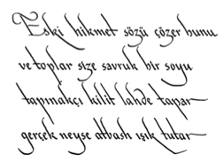

72
Langdon yerden en az bin altı yüz elli metre yükseklikte, dikkatini Saunière’in kapağın arkasından ışıldayan ayna etkili şiirine verirken, gerçek dünyayla bağlarını koparttığını hissediyordu.

Hemen bir kâğıt parçası bulan Sophie, yazıyı aynen aktardı. Bitirdiğinde, üçü de sırayla metni okudular. Bir çeşit arkeolojik bilmeceye benziyordu... kripteksin nasıl açılacağını vaat eden bir bilmece. Langdon mısraları yavaşça okudu.
Eski hikmet sözü çözer bunu... ve toplar size savruk bir soyu... tapınakçı kilit lahde tapar... gerçek neyse atbash ışık tutar.
Langdon mısraların hangi eski şifreyi anlatmaya çalıştığını düşünmeye başlamadan önce, çok daha belirgin bir tını sezinlemişti. Bir kısa bir uzun beş heceli ölçü.
Langdon, Vatikan Gizli Arşivleri’nde geçirdiği geçen yıl da dahil olmak üzere Avrupa’daki gizli cemiyetleri araştırdığı yıllar süresince bu hece ölçüsüyle oldukça sık karşılaşmıştı. Bir kısa bir uzun beş heceli ölçü, eski Yunan yazar Archilochus’tan, Shakespeare’e, Milton’a, Chaucer’e ve Voltaire’e kadar, tüm dünyada yüzyıllarca tercih edilen bir şiir ölçüsü olmuştu. Bu kişiler sosyal yapıtlarını, çoğu çağdaşlarının mistik özellere sahip olduğunu düşündüğü bir ölçüyle yazacak kadar cesurdular. Bir kısa bir uzun beş heceli ölçünün kökleri paganlara dayanıyordu.
Bir kısa bir uzun hece ölçüsü. Zıt vurgulu iki hece. Vurgulu ve vurgusuz. Yin yang. Dengeli bir çift. Beşli dizgi içinde. Beş heceli mısra. Venüs’ün ve kutsal dişinin beş köşeli yıldızına ithafen beş sayısı.
Langdon’a dönen Teabing, “Beş heceli mısra!” deyiverdi. “Ayrıca mısralar İngilizce! La Lingua pura!”
Langdon başını evet anlamında salladı. Kiliseyle geçinemeyen pek çok Avrupalı gizli cemiyet gibi tarikat da, yüzyıllar boyunca İngilizcenin tek saf Avrupa dili olduğunu kabul etmişti. Latin-Vatikan dili, kökenli Fransızca, İspanyolca ve İtalyancadan farklı olarak İngilizce, Roma’nın propaganda makinesinden ayrı tutulmuş ve böylece kardeşliğin öğrenmesini gerektirecek kutsal ve gizli bir dil haline gelmişti.
Teabing, “Bu şiir,” diye methetmeye başladı. “Sadece Kâse’den değil, aynı zamanda Tapınak Şövalyeleri’nden ve Magdalalı Meryem’in dağılan ailesinden bahsediyor! Daha başka ne isteyebilirdik?”
Yeniden şiire bakan Sophie, “Şifre,” dedi. “Eski bir hikmet sözüne ihtiyacımız olduğu belli.”
Gözlerini kırpıştıran Teabing, “Abrakadabra olabilir mi?” diye dalga geçti.
Beş harfli bir kelime, diye düşünen Langdon hikmet sözü olarak nitelendirilebilecek eski kelimeleri aklından geçiriyordu... mistik tilavetlerden bölümler, astrolojik kehanetler, gizli cemiyet talimatları, Wicca sihirleri, Mısır büyü kelimeleri, pagan mantraları. Liste dipsiz bir kuyuydu.
Sophie, “Şifrenin,” dedi. “Tapınakçılarla bir ilgisi var gibi görünüyor.” Metni yüksek sesle okudu. “Tapınakçı kilit lahde tapar.”
Langdon, “Leigh,” dedi. “Tapınakçı uzmanı sensin. Fikrin var mı?”
Teabing uzun süre sessiz kaldıktan sonra içini çekti. “Şey, kilit lahit bildiğimiz mezar taşlarından olmalı. Şiir, Tapınakçılar’ın kutsal saydığı Magdalalı Meryem’in mezarından bahsediyor olabilir. Ama bize fazla yardımcı olmuyor çünkü mezarın yerini bilmiyoruz.”
Sophie, “Son mısra,” dedi. “Gerçeğe atbash ışık tutacak diyor. Bu kelimeyi duymuştum. Atbash.”
Langdon, “Hiç şaşırmadım,” diye cevap verdi. “Kriptoloji 101 dersinde duymuş olmalısın. Atbash Şifresi, insanlığın bildiği en eski şifredir.”
Elbette, diye düşündü Sophie. Ünlü İbrani şifreleme yöntemi.
Atbash Şifresi gerçekten Sophie’nin kriptoloji eğitiminin bir parçası olmuştu. MÖ 500 tarihine kadar giden şifreleme yöntemi, artık sınıflarda yer değiştirmeli temel döngü düzenine örnek olarak kullanılıyordu. Musevi kriptogramının sık rastlanan bir biçimi olan Atbash Şifresi, yirmi iki harfli İbrani alfabesine dayanan basit bir yer değiştirme şifresiydi. İlk harf son harfle, ikinci harf sondan ikinci harfle yer değiştiriyor ve böylece sürüp gidiyordu.
Teabing, “Atbash son derece uygun,” dedi. “Atbash ile şifrelenen metinlere Kabala’da, Lut Gölü Yazmaları ve hatta Eski Ahit’te bile rastlandı. Musevi alimlerle mistikler, Atbash’ı kullanarak hâlâ gizli anlamlar çıkarıyorlar. Elbette tarikat da öğretilerinin bir parçası olarak Atbash Şifresi’ni kullanacaktı.”
Langdon, “Tek sorun,” dedi. “Elimizde şifreyi uygulayabileceğimiz hiçbir şey yok.”
Teabing içini çekti. “Mezar taşının üstünde şifreli bir kelime olmalı. Tapınakçılar’ın kutsal saydığı bu mezar taşını bulmalıyız.”
Sophie, Langdon’ın yüzündeki tatsız ifadeden, Tapınakçılar’ın mezar taşını bulmanın yabana atılacak bir iş olmadığını anlamıştı.
Anahtar Atbash, diye düşündü Sophie. Ama kapımız yok.
Üç dakika sonra Teabing hüsranla derin bir nefes alarak başını salladı. “Dostlarım, ne yapacağımı şaşırdım. Rémy ile misafirimizi kontrol edip, bir şeyler atıştırırken bunu düşünmeme müsaade edin.” Ayağa kalkıp uçağın arkasına doğru ilerledi.
Arkasından ona bakan Sophie kendini yorgun hissediyordu.
Pencerenin dışındaki şafak öncesi karanlık mükemmeldi. Sophie nereye ineceğini bilmeden kendini uzay boşluğuna fırlatılmış gibi hissediyordu. Büyükbabasının hazırladığı bilmecelerle büyümüş olduğundan, önlerinde duran bu şiirin, henüz fark edemedikleri bir bilgi içerdiğini hissedebiliyordu.
Orada daha fazlası var, dedi kendi kendine. Ustalıkla gizlenmiş... ama yine de var.
Ona rahatsızlık veren düşünceler arasında, kripteksin içinde bulacakları nesnenin “Kutsal Kâse’ye götüren bir harita” kadar basit bir şey olmadığı da vardı. Langdon ile Teabing, gerçeğin mermer silindirin içinde bulunduğuna her ne kadar emin olsalar da, Sophie, büyükbabasının hazine avlarını, Jacques Saunière’in sırlarını kolaylıkla açıklamadığını bilecek kadar çok çözmüştü.